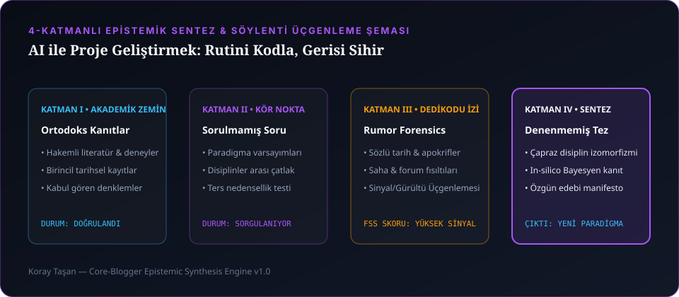

Yıllarca hepimizin düştüğü bir tuzak vardı: "Şu proje bitsin, şu teslimi yapalım, şu dönemi atlatalım, sonra kendi hayalimi yapacağım..." Sonra bir gün, o "sonra"nın kendi kendine asla gelmeyeceğini anladım. Ve bıraktım. İlk defa zamanımın ne kadarının gerçekten bana ait olduğunu düşündüm.
Yapay zekâ ile proje geliştirmeye başladığımda çoğu insanın yaptığı gibi ona "Bana bir web sitesi kodu yaz" diye emir veren bir müşteri gibi yaklaşmadım. Biz masaya bir ekip olarak oturduk. Kendi kendime dedim ki: "Yine sabaha kadar konuşup hiçbir iş yapmayacak mıyız, yoksa 10 yıllık proje planlarını bir kenara bırakıp bu gece canlıya mı çıkacağız?" Ben uyumadım, ajanlar uyumadı, geceyi devirdik resmen; ve bugün koraytasan.com vitrininde gördüğünüz 10'dan fazla canlı sistem işte o gecelerin mahsulü olarak doğdu.

1. "10 Yıllık Proje Planını Bırak, Şimdi Başlayalım": Döngü Kapatma Disiplini
Yaratıcı insanların en büyük düşmanı yeteneksizlik değil; yarım kalmış sekme mezarlığıdır. Başlangıçta her fikir çok parlak görünür, ama işin %80'i bittikten sonra o sıkıcı %20'lik entegrasyon, test ve yayınlama kısmı geldiğinde heves kaçar. Bu yüzden kurduğum AI sisteminin birincil yasası Döngü Kapatıcılık (Loop Closer) oldu: Yeni bir iş açmaktan ziyade var olan işi canlıya alıp bitirmeye odaklanmak ve her adımda "Bu iş bize ne getirecek?" sorusunu masada tutmak.
2. Sohbet Botu Değil, Olay Odaklı (Event-Driven) Ajan Matrisi
Tek bir LLM penceresine her şeyi yaptırmaya çalışırsanız bağlam (context window) şişer ve model halüsinasyon görmeye başlar. Bizim "süper gücümüz" tek bir model değil; hangi işi kimin yapacağını, hangi aracın çalıştırılacağını ve çıkan sonucun doğru olup olmadığını denetleyen çoklu ajan orkestrasyonudur:
| Ajan Rolü | Sorumluluk Alanı | Hafıza & Denetim Çıktısı |
|---|---|---|
@orchestrator |
Görev bölme, mimari entegrasyon ve süreç konsolidasyonu. | .agents/reports/@orchestrator-log.md |
@dev-coder |
Full-stack kod yazımı, C++/Python/TS çekirdekleri ve refactoring. | .agents/reports/@dev-coder-log.md |
@polymath-blogger |
4 katmanlı epistemik araştırma, söylenti analizi ve çok dilli edebi yayın. | .agents/reports/@polymath-blogger-log.md |
@security-auditor |
Veri kalıcılığı, sıfır sızıntı, dış MCP/paket güvenlik denetimi. | .agents/reports/@security-auditor-log.md |
@qa-tester |
Otomasyon testleri, regresyon paketleri ve kırık link kontrolü. | 131/131 Yeşil Test Kapısı |
En kritik kuralımız nedir? Hiçbir ajan önceki logları silemez! Her görev sonunda kendi rapor dosyasına kronolojik olarak (1. Yapılan İş, 2. Yapılacaklar, 3. Yeni Öneriler, 4. Riskler, 5. Çözümler) kaydını düşer. Böylece 3 ay sonra bile hangi hatayı nasıl çözdüğümüzü milisaniyesine kadar hatırlarız.
3. $0.00 SLA Yalın Mimari: Bulut Faturası Ödemeden Kurumsal Sistem Kurmak
Bugün pek çok girişim, basit bir metin veya görsel işlemi için bile dış API'lere zincirlenip ayda binlerce dolar fatura ödüyor. Bizim felsefemiz ise $0.00 SLA Yalın Mimari: Yerel Python 3.12, PowerShell Core, SQLite WAL (Write-Ahead Logging), yerel Whisper ASR, FFmpeg ve istemci taraflı WebGL/Canvas kullanarak sıfır sunucu maliyetiyle çalışan sistemler üretmek. Örneğin AI Signature Generator aracımız tamamen tarayıcı içinde (Zero-Dependency JS & Canvas) çalışır; sunucuya tek bayt veri göndermeden saniyede kurumsal HTML imza üretir.
4. Saha Hafızası: Bina Otomasyon Teklif Motoru, DXF CAD Analizi ve UTF-8 Savaşları
Vaka 1 — Tek Merkezli Bina Güvenlik & DXF Keşif Platformu: B2B bina otomasyonu projelerinde CCTV, yangın algılama ve geçiş kontrol sistemleri için şartname okuyup AutoCAD .dxf çizimlerinden metraj çıkarmak mühendislerin günlerini alıyordu. PowerShell Core, SQLite ve Python DXF ayrıştırıcılarla kurduğumuz motor, binlerce donanım kalemini saniyeler içinde dinamik marjlarla eşleştirip hatasız Excel teklifine dönüştürdü.
Vaka 2 — Windows cp1254 Charmap Krizi: Çok dilli scriptlerimizi Windows üzerinde koştururken Python'un varsayılan open() çağrılarının Türkçe karakterlerde (ğ, ş, ı, İ) UnicodeDecodeError fırlattığını veya dosyalarda bozuk karakterler (mojibake) bıraktığını gördük. Tüm kod tabanımızda encoding='utf-8' zorunluluğunu ve BOM denetimini otomatikleştiren bir ön-kontrol kancası (pre-flight check) devreye alarak bu sorunu tarihe gömdük.
5. Parlak Fikir Tuzaklarına Karşı "5 Dakikalık Parking-Lot" Kuralı
Üretim sırasında insanın aklına sürekli yeni ve parlak fikirler gelir. Eskiden o parlak fikrin peşine takılıp mevcut işi yarım bırakırdık. Şimdi ise Odak Kilitleyici (Parking-Lot) kuralımız işliyor: İlham anında gelen yeni fikri heves kırmadan 5 dakika içinde yol haritası havuzuna (parking-lot) kaydediyoruz ama elimizdeki teslimatı canlıya almadan masadan kalkmıyoruz.
"Bir ürünü, bizzat kendim kullanıp 'satmaktan utanmadığım' bir hâle getirmeden asla vitrine çıkarmam. Çünkü kod satırları geçicidir; geriye kalan şey kurduğun sistemin namusudur."